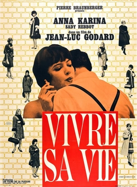

Jean-Luc Godard
1962
85 minutes
TITLE: Vivre sa Vie TEXT PLACEHOLDER 151
This is a Godard film about a woman (Anna Karina, of course) who gradually ends up becoming a prostitute over the course of the film and ultimately meeting a very tragic end. It's the first Anna Karina film that you recall seeing and it was love at first sight. Something about her pushes your buttons, but this is true of an absurd number of other actresses as well, so you suppose she shouldn't be too flattered by this obsession--and you're sure you are in good company.
You will watch this film and then inadvertently return to it months later under different circumstances. You will be on a couch in the waning hours of the morning with a hazy beer buzz that is slowly wearing off, watching Kate Bush videos with a friend. You've been in this exact situation numerous times with many different people, so this alone is no surprise. However, a sudden and unusual interest in the "Cloudbusting" video will trigger an intense desire in your friend to try to find a video where you can see Donald Sutherland's dick and balls. They are certain this exists, and they begin looking for clips of the 1973 film Don't Look Now on Youtube, to no avail. You start to argue that this isn't likely to be productive since Youtube filters nudity and sex scenes fairly aggressively, especially copyrighted ones.
Being a bit tired and ready to retire, you suggest to your friend that a different approach is necessary. You take her laptop, activate private browsing mode, and with brief apologies for the crudeness you navigate over to the aznude website just to hasten the process. The site pops up with its usual vulgar array of ads for meeting horny singles in Maryland, animations for one weird trick to enlarge your male organ by sticking it inside a bottle of apple cider vinegar, prostate stimulation, et cetera. "Sorry, sorry," you mutter to your friend before typing in Donald Sutherland's name and clicking on the clip for the film in question.
You apologize for the crudeness of your methods, but explain that this is really the easiest way to locate any spicy clip from any film, and it's slightly less gross than looking for it on other pornographic sites. She doesn't seem familiar with the site, but seems to trust your judgment on the matter. The two of you watch coolly as Donald Sutherland and Julie Christie consummate this scene, which is fairly explicit, and you're pretty sure you spy Donald Sutherland's tackle during the sweaty, hairy, 1970s sex depicted on the small screen.
Your friend seems to be satisfied. "Okay, your turn to pick something to watch next," they declare.
"From this site?" you ask, a bit wary and confused.
"Whatever, wherever" is the response.
Not wanting to escalate things too much, you type Anna Karina's name in the search box and pull up a relatively modest spicy scene from a film called Laughter in the Dark, in which you can see her bare bottom. You feel a bit silly choosing such a moderate clip since one of the ads now features a woman getting railed in all three holes on the margins of the screen. Neither you nor your friend acknowledge this.
Your friend shrugs and seizes control of the laptop again. "This scene is sexier," they declare, doing a simple google search for "Anna Karina jukebox" and navigating to the clip from this film where she's dancing to a jukebox fully clothed while a group of men look on. Your friend gives you a triumphant look while the clip plays, as though she had won some contest you didn't know you were having.
"This is that film where she's a prostitute, right?" you ask, not remembering the English or the French title of the film in the moment.
"Right," your friend tells you, explaining the context of the clip to you and how much sexier it is than most scenes that have explicit nudity. "Have you ever been to a prostitute?"
"I've been inside a couple of brothels--both for my job and while off-duty," you answer honestly. "But no, I've never, uh, actually paid for services."
"Oh. Tant pis," your friend responds cryptically.
You watch a few more dance clips of a similar nature which your friend gushes enthusiastically about. Before long the sun rises and you're soon dozing on the couch.
Time to choose something different: